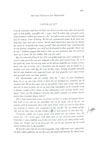
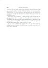

| [1956-57: Tsjip/De Leeuwentemmer, eerste drukproef voor het Verzameld Werk, zwarte
inkt (OpdP1b)] [OpdP1b vs. OpdD3] |

Naar boven]
Voor de zóveelste maal kom ik thuis van de reis en weer staat mijn stoel gereed, tafel en bed gedekt,
pantoffels bij 't vuur, alsof ik iedere dag verwacht werd. Mijn kinderen hebben heel gewoon "Pa" gezegd en mijn vrouw heeft gevraagd wat ik verkoos,
lever of haring. Ik heb niet geantwoord omdat ik de moed niet had mijn eigen stem aan te horen, heb de hand uitgestoken naar wat het dichtst bij stond en zwijgend mijn maag gevuld. Hun gerustheid, hun zekerheid dat ik ook ditmaal terugkeren zou heeft mij beschaamd en diep gegriefd. Maar was ik aan 't bulderen gegaan dan had er niets op over geschoten dan met weerzin weer op te staan. En het trekken lokt mij niet meer.
Ben ik vermoeid of kan ik het licht van gindse land niet meer verdragen? Ik voel in ieder geval dat van een volgende tocht niets meer terecht komt. En zo is het goed ook, want mij rest nog maar net de tijd om eindelijk met vrouw en kinderen wat mee te leven, mij te koesteren aan de warmte van de haard en te werken voor onze oude dag die voor de deur staat. Zolang ik ginder dwaalde heb ik mijn kinderen niet opgevoed maar met hen gespeeld, voor mijn vrouw niet gezorgd maar van haar genoten.
Die Meimaandjes zijn nu voorbij. Hier bij 't vuur, in onze kooklucht, komt het er op aan mijn plicht te doen als een doodgewoon mannetje dat ik tenslotte ben. Want hun ogen zijn op mij gericht. Doet mijn vrouw haar plicht niet als zij wast en plast, als zij op griezelige regendagen op de vismarkt loopt te dwalen zonder acht te slaan op haar aderspatten noch op haar slechte stoelgang? Doen niet die kinderen eveneens hun plicht wanneer zij achter schoolmuren hun zonnigste dagen slijten?
Dit is mijn laatste kans want zij groeien als kool en steken de koppen bijeen. Een heeft al een snor en een ouwelijke trek om de mond. Als ik mij nu niet aanpas word ik uitgestoten door mijn eigen broed, want zij zien in mijn dolen een verraad en scharen zich zwijgend om hun moeder. En zij hebben gelijk. Als ooit het huis vuur vat dan worden zij voor haar gewekt en niet door mij.
Trouwens, ginder ver is geen plaats voor kerels met een schorre stem, die weten hoe 't in 't leven gaat. Ook dáár voelt zo een zich ten slotte verlaten. Ook dáár is men eindelijk nog slechts een vieze vlek in een onbezoedeld landschap, een hoopje vuil in de feestzaal. En zal ik niet geruster bij de haard zitten stinken dan in dat paradijs?
Ik heb dus mijn taak als razend aangepakt, mijn ridderorde weer opgestoken en mijn
zaken gedreven als een die nooit dat land heeft bereisd. Ik schreef mijn 
Naar boven]
rekeningen met vaste hand, groette al wie mij groette, had een minzaam woord voor
vriend en vijand en liet mijn schuldenaars afmaken door een deurwaarder, zoals het hoort. Tot ik op een heilloze dag dat mormel van een kleinzoon in huis gewaar werd, die met zijn gekraai en zijn blote billen aan ons rotten een eind heeft gemaakt.
Toen heb ik mezelf betrapt bij 't sluipen naar de zolder waar ik mijn staf heb opgezocht in stof en spinrag. En nu zullen mijn klanten wachten en niets zien komen. Die nog niet betaald hebben kunnen stikken in mijn geld. Ik heb eerst met de keel een toonladder geschraapt en dan met zijn kraaien ingestemd. En mijn benen jeuken. Kom, jongen, vooruit is de weg.
Mogen vrouw en kinderen mij vergeven dat ik hen een laatste maal verloochen voor die vermaledijde heerlijkheid waar een gouden vogel jubelt, véél hoger dan de leeuwerik.